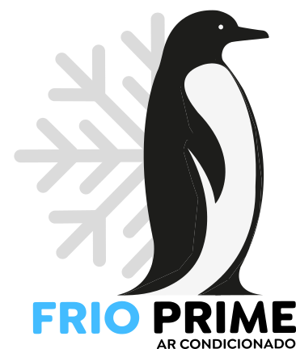

Oferecemos serviços de climatização personalizados com tecnologia avançada para garantir conforto térmico e eficiência operacional em ambientes. Nossos serviços melhoram o conforto térmico e aumentam a produtividade dos ocupantes, proporcionando um ambiente agradável e saudável.
CONHEÇA NOSSOS SERVIÇOS
Nossa história e
comprometimento
A Frio Prime é uma empresa especializada em instalação e manutenção de equipamentos de ar condicionado. Fundada em 2019 pelo experiente profissional Rodrigo Bevilacqua, formado pelo Senai e com mais de 19 anos de atuação no mercado, a Frio Prime tem como objetivo oferecer um serviço Prime aos seus clientes, com excelência e qualidade em todos os serviços prestados. Nossa empresa se destaca por priorizar a satisfação do cliente e oferecer soluções personalizadas para cada necessidade. Além disso, nossos profissionais estão habilitados a realizar a vistoria exigida pelos órgãos fiscalizadores, garantindo a qualidade do ar interior e o funcionamento eficiente do sistema de ar condicionado.
